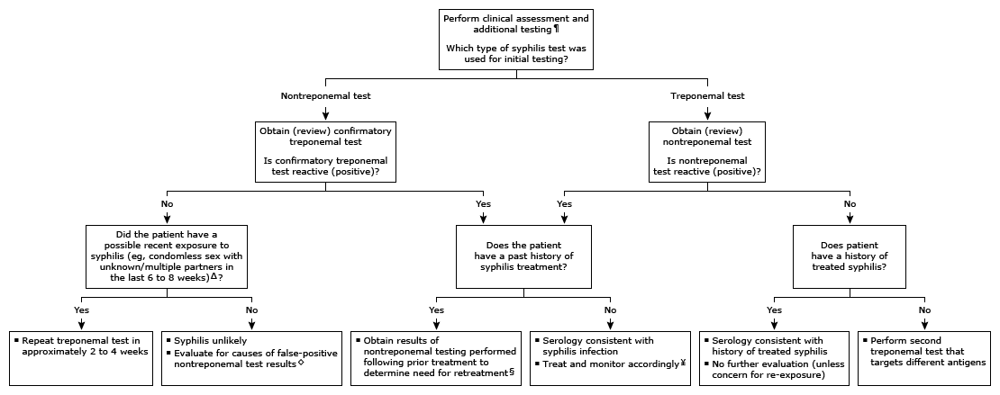

Initial evaluation of positive syphilis serology in the nonpregnant adult*

This algorithm is intended for use in conjunction with additional UpToDate content on syphilis.
STI: sexually transmitted infection; SLE: systemic lupus erythematosus. * There are 2 types of serologic tests used to help diagnose syphilis infection by Treponema pallidum. In the United States, treponemal tests are qualitative only and are reported as "reactive" or "nonreactive." However, in some places (eg, Europe), treponemal assays may be quantitative. Nontreponemal tests are semiquantitative, and positive results are reported as a titer of antibody (eg, 1:32, which represents the detection of antibody in serum diluted 32-fold). Laboratories should perform and report end-titer dilutions for nontreponemal antibodies. Interpretation of a specific abnormal test result should be based on the reference range reported by the laboratory. ¶ Patients with signs and symptoms consistent with syphilis should undergo additional serologic testing to confirm the diagnosis. However, in patients with suspected early syphilis or a known recent exposure, treat empirically. Advise precautions to prevent transmission of syphilis. Screen for STIs. A nontreponemal serologic test should be obtained just before initiating therapy (ideally, on the first day of treatment) to establish the pretreatment titer. Δ Both treponemal and nontreponemal tests take time to convert (eg, approximately 2 to 4 weeks) in the setting of a new infection. Thus, on rare occasions, asymptomatic patients who have had a recent exposure to syphilis may have a negative nontreponemal or treponemal screening test prior to the development of antibodies. ◊ False-positive nontreponemal tests can be seen in the setting of pregnancy, an acute event (eg, febrile illness, endocarditis, Rickettsial disease), or recent immunization. Test abnormalities attributed to these conditions are usually transitory and typically last for 6 months or less. Other etiologies include chronic conditions, such as autoimmune disorders (particularly SLE), intravenous drug use, chronic liver disease, and underlying HIV disease. § Serology could be consistent with new infection, inadequately treated prior infection, or expected serologic findings post-treatment. ¥ Refer to additional UpToDate graphic for specific treatment and monitoring information for clinical manifestations and treatment of syphilis.